No network where it is needed
The campus is remote with no public mobile data. WiFi requires a coupon obtainable only from inside the campus. Guards previously allowed visitors to use a hotspot to complete the form. That was withdrawn.
Product Ideation · Mid-term Examination · Vijaybhoomi University
A visitor cannot get onto campus because nobody is obliged to answer. An end-to-end study of the visitor entry system: research, sensemaking, and information architecture.
P1 travelled three hours to visit her son. She knew the system existed, had the form in advance, and started an hour early so she would not have to wait outside in the rain. She stood in it for twenty minutes anyway.
Two applications. Over an hour. Resolved by a phone call made outside the product entirely.
01 · Problem space
Vijaybhoomi University uses a third-party visitor management system for all campus entry. A visitor completes a six-screen self check-in at the gate, then waits for host-side approval before a QR pass is issued over WhatsApp.
Four conditions make it structurally fragile at the point of use.
The campus is remote with no public mobile data. WiFi requires a coupon obtainable only from inside the campus. Guards previously allowed visitors to use a hotspot to complete the form. That was withdrawn.
Purpose of visit offers four options: Meeting Appointment, AMC and Services, Admission Walk In, Alumni Students. A parent fits none, and the resulting flow demands a required Company Name.
Approval rights moved from teaching faculty to a small number of administrators. The form still accepts a request routed to someone with no authority, and returns no error. P1 still calls approvers “the professors”.
If the named approver does not act, the request is not rejected. It is held, then silently cancelled, and the visitor starts again.
The digital system collects more information than the paper register it replaced, and every surplus field is one the visitor objects to.
02 · Artefact analysis
These are screenshots of the live third-party system, captured as research evidence. They are not proposed designs. No interface was designed in this project.
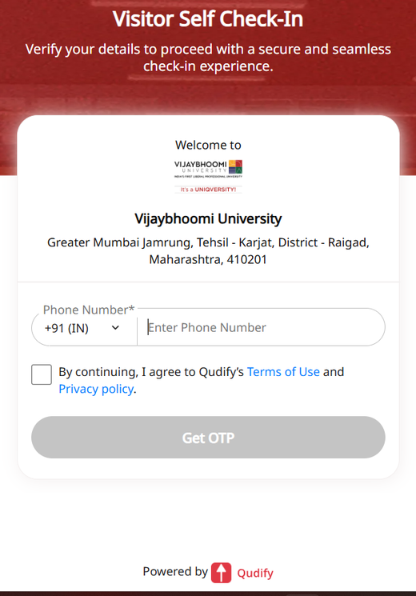
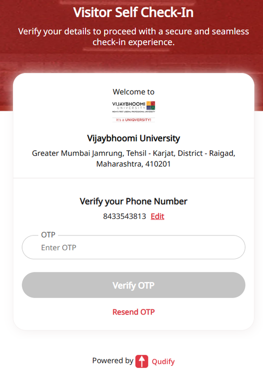
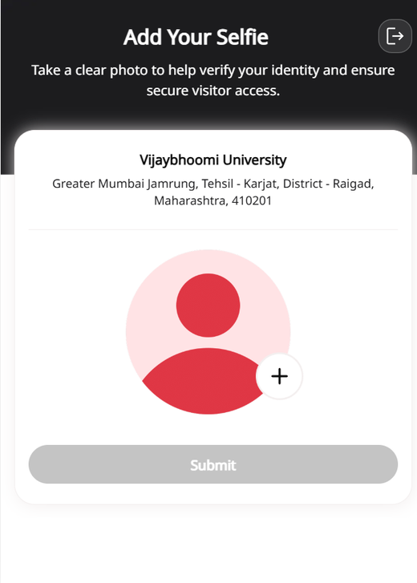
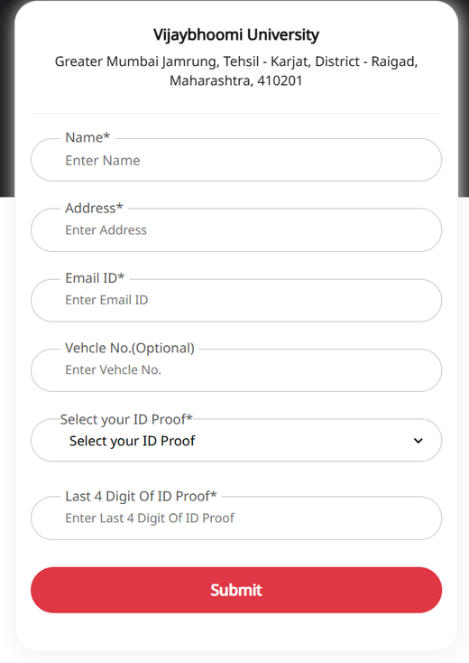
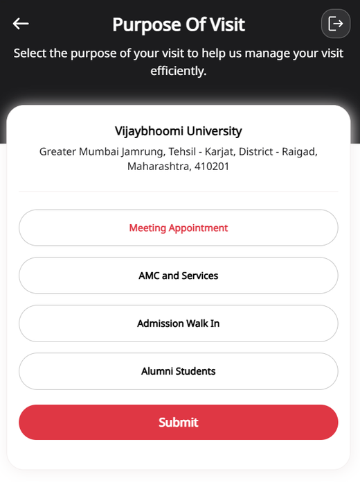
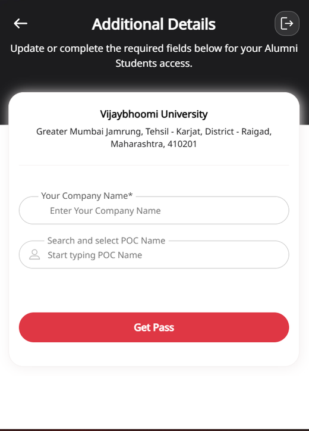
Both guards were asked what information they genuinely need to admit someone. Their answer, describing the physical register they maintain regardless:
The fields that remain constant are name, phone number, address, reason of visit, and signature.
Five fields. Every additional item the digital system demands, meaning the selfie, email, ID proof type, ID digits and company name, is collected but not used to decide who enters.
03 · Method
| ID | Role | Method | Language |
|---|---|---|---|
| P1 | Visiting parent, mother of a resident student | Recorded retrospective account and written follow-up | English |
| P2 | Security guard, main gate, shift A | Semi-structured interview, 8 questions | Hindi, translated |
| P3 | Security guard, main gate, shift B | Semi-structured interview, 8 questions | Hindi, translated |
| R2–R9 | Students, visitors and one non-affiliate | Hybrid card sort, 20 items | English |
| TT1–TT5 | Students, none of whom did the card sort | Moderated paper tree test, 8 tasks | English |
P2 and P3 work different shifts and were interviewed separately. Their answers converged so closely that they are reported as a single gate-staff account. That convergence is itself a finding: the failure pattern is routine and structural, not shift-specific.
04 · Persona
Proto-persona · before research
User persona · evidence based
Homemaker, 40 to 50 · three-hour journey each way · repeat visitor · visits Fridays around lunchtime, because that is when her son is free
A three-hour journey each way means being refused entry costs a full day and a six-hour round trip. That is why the goal is certainty.
| I assumed | The research showed |
|---|---|
| She is slow or unfamiliar with the app | She was more prepared than the system expected, pre-submitting with an hour of buffer |
| The pain is the form | The form was tolerable. The silence after it was not |
| The wait is about 20 minutes | Over an hour, two applications, one silent cancellation |
| Her goal is speed | Her goal is certainty. She would accept a slow process that told her the outcome in advance |
She was the best-case visitor. She knew the system existed, had the QR in advance because her son fetched it, built in an hour of buffer, and had somebody on campus who could intervene. It still failed. Per the guards, visitors without an insider “just keep waiting.”
05 · Empathy and journey
![Empathy map for P1, the visiting parent, in four quadrants. Says: verbatim quotes including expecting that the professors would be busy, half an hour passed forty five minutes passed, none of the professors or the authority was not reachable, and the last four digits of Aadhaar card simply not wanted. Thinks: will I be allowed in at all today, who is actually supposed to approve this, has anyone even seen my request. Does: starts the form an hour early from the car, re-applies after the first request is silently cancelled, saves the QR pass, stops making unplanned visits, relies on her son to negotiate with the guard. Feels: a sequence running prepared, resentful, uncertain, anxious, dependent at minus five, then relieved. Pains and gains are listed below the quadrants.](images/empathy-map.png)

She began the form an hour early specifically so she would not have to wait outside in the rain. She stood in it for twenty minutes anyway. Every safeguard available to a well-prepared, well-connected visitor was deployed, and none of them touched the actual failure. The bottleneck is not preparation, information, or timing.
06 · Core pain point
The approval step has no accountable owner, no time bound, and no failure path. The visitor guesses at an approver from an outdated mental model, receives no confirmation that anyone with authority has seen the request, is silently penalised when nobody acts, and can only escape by finding a human inside the institution.
The form is a real irritation and it appears at stage 2 of the journey. Fixing it moves the emotion line from −1 to 0. The trough stays at −5. A shorter form, a faster OTP or better microcopy would not have changed the outcome by a single minute.
| Source | Evidence |
|---|---|
| P1, visitor | “Very difficult to figure out whom to ask approval for, especially when a parent is visiting” |
| P2 & P3, gate staff | “Who should I ask approval from?” is one of the three most common questions at the gate |
| P2 & P3, gate staff | “We can call a few people who have the authority. If they lift up the call, all well and good. If not, the guests just keep waiting” |
The guards do not know who the correct approver is either. They telephone a shortlist and hope. The failure mode is silence, and silence has no recovery path.
The person P1 travelled three hours to see cannot admit her. A student can neither approve a visitor nor route a request to someone who can. The system models visitors and approvers, but not the relationship that motivates the visit.
07 · User stories
US-1 · fixes stages 3 and 5
As a visiting parent, I want to see whether my request has been seen and who it is waiting on, so that I know whether to keep waiting or seek another route.
Answers the gate question “how much time will it take?” Converts an unbounded silent wait into a bounded, legible one.
US-2 · fixes stages 4 and 6, the trough
As a visiting parent, I want my request to move automatically to a backup approver if the first does not respond within a set time, so that one unavailable person cannot strand me at the gate.
Formalises in software what the guard already does informally by telephone, and removes the requirement to have an insider advocate.
US-3 · fixes the connectivity precondition
As a student host, I want to raise a visitor request in advance from inside the campus network, so that my visitor arrives with a valid pass and never needs mobile data at the gate.
The host raises, not approves. Authority stays where the institution put it.
US-4 · fixes stage 4
As a visiting parent, I want the system to determine the correct approver from who I am visiting, so that I never guess a name or get told mid-wait that I chose the wrong person.
Removes the one decision the visitor is least equipped to make. It requires current internal knowledge of an organisation she does not belong to.
US-5 · fixes stage 2
As a visiting parent, I want to provide only the details the gate register actually requires, so that I am not asked for Aadhaar digits and a selfie that serve no operational purpose.
Defensible against a specific benchmark: the five fields the gate staff say the physical register retains.
08 · Card sort
A hybrid card sort with six supplied categories, a “doesn’t fit” option, and a free-text question inviting participants to propose categories of their own. Nine responses collected. One excluded for assigning all twenty items to a single category in sixty seconds, under a criterion set before analysis.
| Item | Category | Agreement |
|---|---|---|
| See whether my request has been opened | Checking on my request | 8/8 |
| See how long a decision usually takes | Checking on my request | 8/8 |
| Show my entry pass at the gate | Getting in and out | 8/8 |
| Show my exit pass when leaving | Getting in and out | 8/8 |
| What to do when there is no phone signal | Getting help | 8/8 |
Participants hold a clear, shared model of “the state of my request” as a single thing. The concept exists in their heads and does not exist in the product.
| Item | Distribution | Categories used |
|---|---|---|
| Send a reminder to whoever is deciding | Apply 2 · Checking 2 · In and out 2 · Help 1 · None 1 | 5 |
| Pass the request to a backup person after a set time | None 4 · Help 2 · In and out 1 · Checking 1 | 4 |
These two are the features that directly address the pain point, and they are the least placeable items in the deck. Participants could not file them because no system they have used contains them.
Pass request to backup person, I feel it doesn’t fit in the category mentioned.
Pass the request to the backup person after a set time is still an option that is not yet there.
Asked what was missing from a visitor system, R7 wrote: “Time to respond. After which the visitor can seek help.”
That is user story US-2, proposed by somebody who had never heard of this project. The concept is wanted, but it has no vocabulary and no category, because it exists in no product these users have encountered. An information architecture cannot inherit a home for it. It has to create one.
“Add another visitor to the same request” took a clean 5 of 8 majority. It also drew more “hardest to place” nominations than any other card:
Adding another visitor, I’m confused it’ll go in which one exactly.
A quantitative majority concealed real uncertainty. Without the free-text prompts this card would have looked settled. It is the strongest argument in the study for not reading a sort from the numbers alone.
| Stakeholder | Position | Evidence |
|---|---|---|
| P1, visiting parent | Wants less data collected | “The last four digits of Aadhaar card, simply not wanted” |
| R9, student host | Wants more verification | Listed “photo of the visitor and the vehicle number” as missing |
Neither is confused. The visitor bears the entire privacy cost and receives no security benefit, because she already knows who she is. The host bears risk from other people’s visitors and pays no privacy cost for data collected about them. This is an externality, and it has to be resolved rather than averaged.
I think I was a bit confused. You could’ve added a ‘not sure’ option.
Valid, and it cuts both ways. “Doesn’t fit any of these” was intended to mean this belongs nowhere. At least one participant used it to mean I do not know. That weakens the homelessness measure, and it supports the reading that the escalation votes reflect unfamiliarity rather than misplacement. The tree test resolves it by observation instead of by checkbox.
09 · Information architecture, v1
CAMPUS VISITOR ACCESS
│
├── Apply for a Visit
│ ├── Enter my name and phone number 6/8
│ ├── Enter the reason for my visit 6/8
│ ├── Choose the person I am visiting 6/8
│ ├── Add another visitor to the same request 5/8 contested
│ ├── Reuse details from my last visit 4/8 narrow
│ └── Campus visiting hours and gate location 3/8 weak
│
├── Checking on My Request
│ ├── See whether my request has been opened 8/8
│ ├── See who the request is waiting on 7/8
│ ├── See how long a decision usually takes 8/8
│ ├── Get an alert when a decision is made 4/8
│ ├── Send a reminder to whoever is deciding no majority
│ └── Pass the request to a backup person homeless
│
├── Getting In and Out
│ ├── Show my entry pass at the gate 8/8
│ └── Show my exit pass when leaving 8/8
│
├── My Information and Privacy
│ ├── Upload or enter ID proof details 7/8
│ └── Read what happens to my personal info 6/8
│
├── Getting Help
│ ├── Call the gate desk for help 7/8
│ └── What to do when there is no phone signal 8/8
│
└── For Hosts
├── Request a visit for my guest homeless
└── See guests expected today homeless
Four placements were not decided by the data. Naming them in advance is what made the tree test worth running.
10 · Tree test
Eight tasks, five participants, none of whom did the card sort. Order randomised per participant, one level of the tree revealed at a time, on paper. Every attempt was eventually marked as reached, so first-click accuracy is the metric that discriminates.
One dot per participant. Filled means the first heading they pointed at was the right one. Thresholds set before testing: 4 to 5 sound, 2 to 3 ambiguous, 0 to 1 structurally wrong.
| Task | Tested | First click | Direct | Median | Went instead |
|---|---|---|---|---|---|
| T1 | Request status | 5/5 | 4/5 | 15s | none |
| T5 | Privacy policy | 5/5 | 5/5 | 10s | none |
| T6 | No phone signal | 5/5 | 5/5 | 20s | none |
| T2 | Who I am visiting | 4/5 | 3/5 | 20s | Checking ×1 |
| T7 | Backup approver | 4/5 | 4/5 | 32s | Getting help ×1 |
| T3 | Add a second visitor | 2/5 | 2/5 | 20s | Checking ×3 |
| T4 | Host pre-registration | 1/5 | 4/5 | 40s | Apply for a visit ×4 |
| T8 | Visiting hours | 0/5 | 1/5 | 75s | Help ×2, In and out ×2, Checking ×1 |
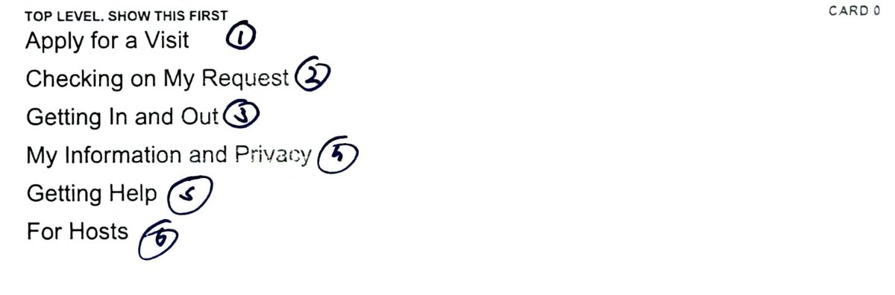
Before testing I predicted T7 would fail, because “pass to a backup person” was the most homeless card in the sort at 4 of 8. It passed at 4 of 5, direct, in 32 seconds.
This settles the ambiguity R9 raised. Presented as an abstract card with no context, half the sample could not place automatic escalation. Presented as a concrete situation, “it’s been an hour and the person deciding still hasn’t responded”, four of five went straight to the right place.
The concept was never mis-categorised. It was unfamiliar. People have no word for automatic escalation because no system they use has it, but they know exactly where it belongs the moment they need it. Nothing changed.
Nobody found visiting hours. It was the slowest task in the study by a factor of five. First clicks split evenly between Getting Help and Getting In and Out, but the quotes converge absolutely.
Call desk for help
Call gate for info
Call for help desk
Calling for desk help
Four of five treated visiting hours as a question you ask a human, not information you look up. That independently reproduces the guards’ account of fielding “how much time will it take?” all day. The gate desk is already the institution’s information system, and five participants who had never met those guards assumed the same thing.
The even split is the signature of a compound label doing two unrelated jobs: hours are a planning question, location is an arrival question.
Four of five went to Apply for a Visit instead of For Hosts. Note the trap in the directness column: T4 scored 4 of 5 direct. They were confidently wrong and went straight there without hesitating. Success rate alone would have hidden the failure completely.
Students do not self-identify as hosts. Given a concrete situation a student thinks “I am arranging a visit”, not “I am performing a host function”. The role label described the system’s model of the user, not the user’s model of themselves.
The card sort said Apply, 5 of 8. The tree test said Checking, 3 of 5. Both are right.
The card sort measured the words. The tree test measured the moment. Read as an abstract card, “add another visitor to the same request” sounds like part of filling in a form. Given a scenario beginning “you have already submitted”, it becomes an action performed on a live request. That is exactly why three sorters named it the hardest card in the deck.
All five sessions, recorded live. First click, path, reached, direct, time and quote were captured for every task while the participant was still at the table.
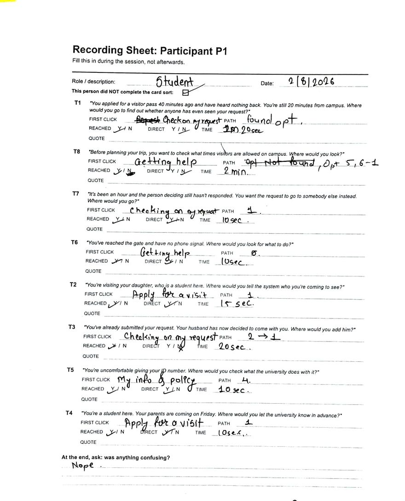
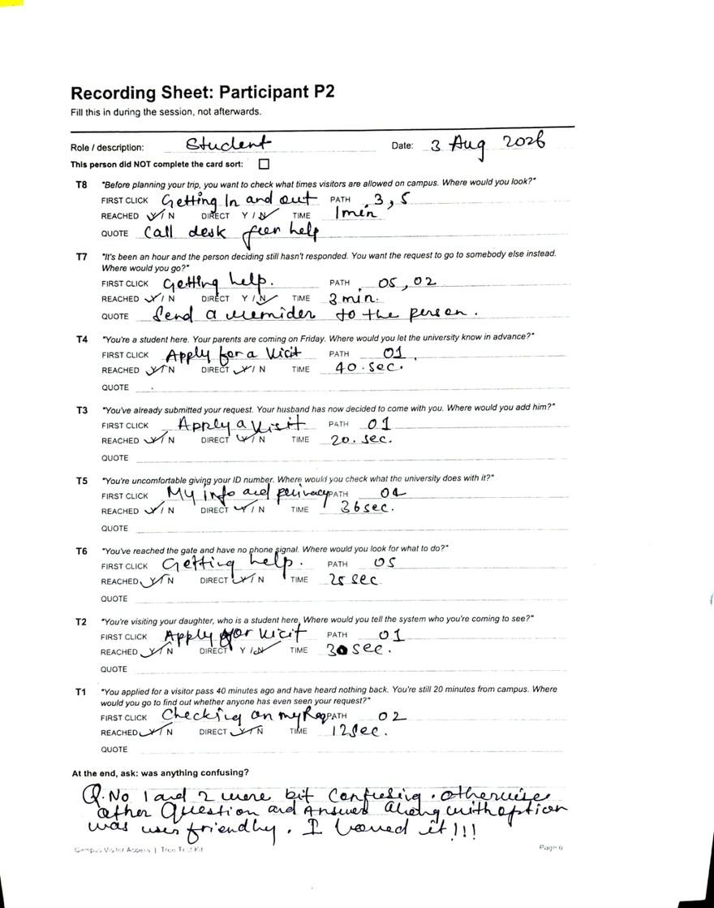
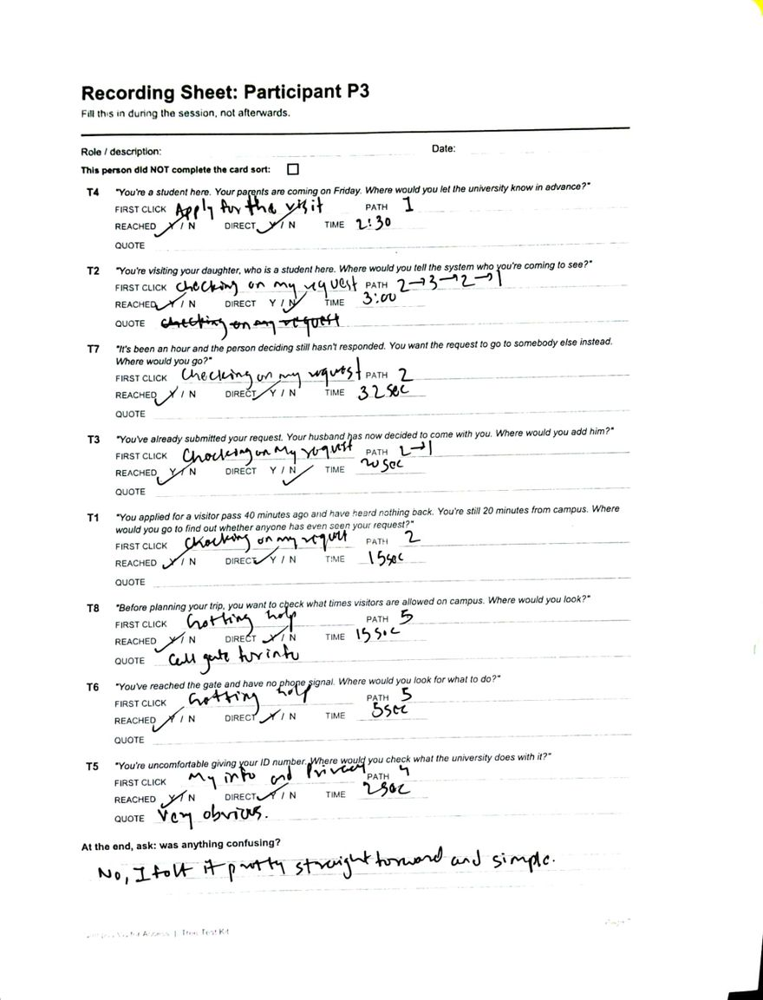
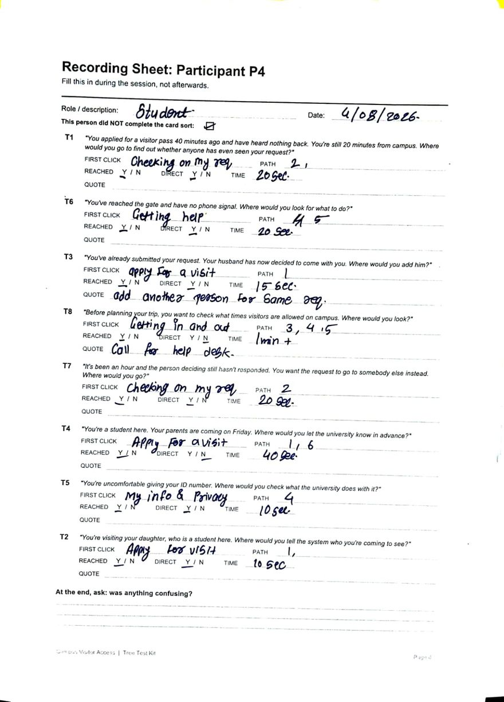
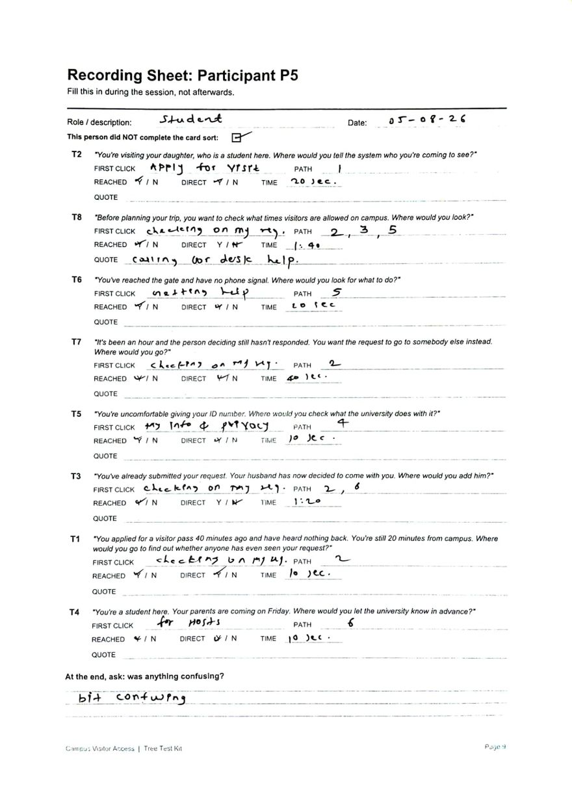
11 · Information architecture, v2
CAMPUS VISITOR ACCESS (V2)
│
├── Request a Visit renamed
│ ├── Enter my name and phone number
│ ├── Enter the reason for my visit
│ ├── Choose the person I am visiting
│ ├── Request a visit for my guest moved in
│ └── Reuse details from my last visit
│
├── Checking on My Request
│ ├── See whether my request has been opened
│ ├── See who the request is waiting on
│ ├── See how long a decision usually takes
│ ├── Get an alert when a decision is made
│ ├── Send a reminder to whoever is deciding
│ ├── Pass the request to a backup person unchanged
│ ├── Add another visitor to the same request moved in
│ └── See guests expected today moved in
│
├── Getting In and Out
│ ├── Show my entry pass at the gate
│ ├── Show my exit pass when leaving
│ └── Gate location and directions split
│
├── My Information and Privacy
│ ├── Upload or enter ID proof details
│ └── Read what happens to my personal info
│
└── Getting Help
├── Call the gate desk for help
├── What to do when there is no phone signal
└── Campus visiting hours split
REMOVED: For Hosts 1/5 first-click accuracy
| Change | Type | Evidence |
|---|---|---|
| Split “visiting hours and gate location” across two nodes | Split | T8 at 0/5, even split between Help and In and out, 4/5 said they would call the desk |
| Dissolve “For Hosts”, redistribute both items | Merge, node removed | T4 at 1/5, four of five went to the application node |
| Rename “Apply for a Visit” to “Request a Visit” | Rename | Follows from the merge. The node must now cover host-initiated requests |
| Move “add another visitor” to Checking | Move | T3, three of five went there. The scenario presupposes an existing request |
| Leave the backup approver where it is | No change | T7 passed 4/5, contradicting the prediction |
Checking on My Request now holds eight items and is doing three jobs. That is a real risk, and v1 already flagged the node as potentially overloaded. It is not split, because the test gave no evidence to split it: T1 and T7 both passed. Splitting now would be designing on intuition, which is the behaviour this process exists to avoid. It is the first thing to test in a further round.
12 · Prioritisation
How a feature is defined here. A feature is a user-facing capability, not a field or a screen. “Submit a request” is one feature; the name, phone and reason fields are components of it. Splitting them would let me claim a four-item MVP that quietly contained fifteen things. The test applied to every bundle: would a user describe these as one thing they can do?
13 · DFV matrix
Two features competed for the last Must-Have. Both trace to Phase 1 user stories, both have independent supporting evidence, and both fix a different link in the same chain.
US-2
US-3
| Score | Desirability | Feasibility | Viability |
|---|---|---|---|
| 1 | Researcher assumption only | New infrastructure plus external integration | Reverses an explicit institutional decision |
| 2 | Inferred from a single source | New user role, authentication or third-party integration | Needs new policy and creates new risk |
| 3 | Stated by one participant | Extends existing objects moderately | Needs a policy decision, low risk |
| 4 | Multiple independent sources, or strong behavioural evidence | A rule or scheduled job over existing data | Formalises something already done informally |
| 5 | Multiple sources, independently invented by a participant, and targets the emotion trough | Configuration only | Reduces existing operational cost, no policy change |
| Dimension | A · Escalation | B · Host pre-registration |
|---|---|---|
| Desirability | 5 | 3 |
| Feasibility | 4 | 2 |
| Viability | 4 | 2 |
| Total | 13 | 7 |
A scores 5. Four independent lines converge: P1’s first request was silently cancelled; the guards confirm no fallback exists; R7 invented the feature unprompted; and it targets stage 6, the lowest point on the emotion line.
B scores 3, and this is what decided the comparison. B’s headline justification was always the connectivity precondition: no data at the gate, QR only at the gate, so a visitor cannot begin remotely. That is already answered by M1 at near-zero cost. Publishing the form at a reachable URL is a distribution problem, not a feature. Once M1 exists and M2 removes the need to name an approver, B’s unique remaining value is that a host can initiate before the visitor thinks to. Useful. Not MVP-defining. B also scored 1 of 5 on tree test task T4.
A is a timer, a routing rule and a notification. A scheduled job finds requests older than the threshold and reassigns them, operating on the request object that M1 and M2 already create. No new user role, no authentication, no external integration. It scores 4 rather than 5 only because the backup approver pool must be defined as data first.
B is a second product. It needs a host user role, authentication against the student directory, a guest invitation mechanism, a host-to-guest linkage model, and it must function on the campus network. Every one of those is a dependency A does not have, and the integration surface with the student information system is where the schedule risk lives.
A formalises something that already happens. Guards already perform manual escalation by telephone, badly and inconsistently. Automating an existing workflow is the cheapest institutional change to sell: nobody has to agree to a new principle, only to write down the list of people they are already ringing.
B pushes against a decision the institution just made. Approval authority was deliberately centralised. B devolves initiation to students, moving in the opposite direction, and introduces a new abuse surface. Both objections are answerable, but answering them costs political capital an MVP does not have.
Feature A wins on every dimension. The decisive argument is not the total: it is that A’s benefit cannot be obtained any other way, while most of B’s is already delivered by M1 and M2 at a fraction of the cost. Nothing except a time bound stops a request from dying in silence.
14 · The MVP
A visitor can raise a request from anywhere with only the information the gate actually uses. It reaches somebody with the authority to act on it. The visitor can see what is happening. And if nobody acts, it moves to somebody who will.
The core finding stated as a state machine. Not an interface: what happens to a request after it is submitted, and where it currently dies.
Observed on 31 July 2026, and corroborated by both gate staff.
The only escape is outside the product: a guard telephones a shortlist of people and hopes one answers. A visitor without an insider on campus has no escape at all.
The four Must-Have features, expressed as states rather than screens.
No escape hatch is required, because the loop back to the visitor has been removed. The one new state, the timer, is what the guards already improvise by telephone.
{kind=link}
{kind=link}
{kind=link}
{kind=link}
{kind=link}